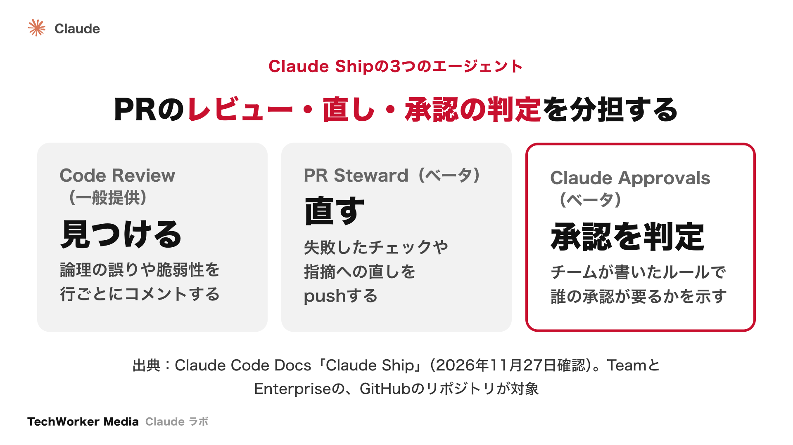
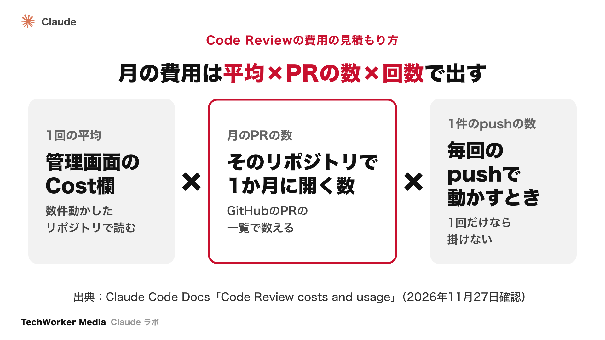
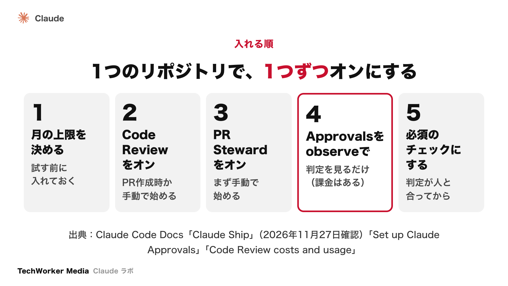
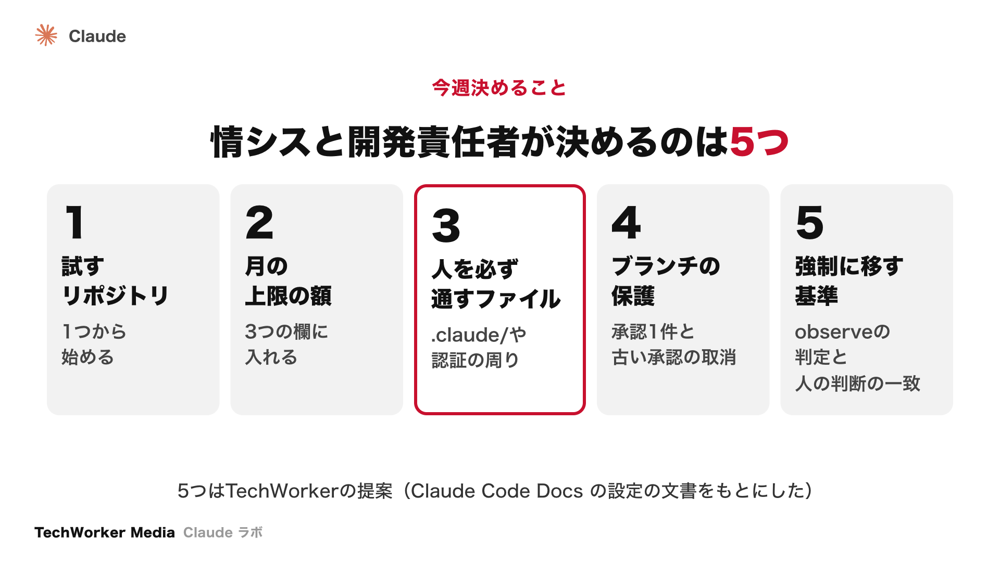

Anthropicは2026年11月23日、GitHubのプルリクエスト（PR）をClaudeがレビューし、直し、承認の判定まで進める「Claude Ship」を出しました。対象はTeamとEnterpriseのプランです。
- 中身：Code Review（一般提供）、PR Steward（ベータ）、Claude Approvals（ベータ）の3つのエージェントです。
- 費用：トークンの使用量で決まり、プランに含まれる使用量とは別に請求されます。PR Stewardは、管理者が設定するまで専用の上限がありません。
- 注意：GitHubの設定によっては、作成者のほかに誰も見ないままマージされることがあります。
Claude Code Docsの設定・費用・権限の文書を2026年11月27日に読みました。入れる前に情シスと開発部門の責任者が決めることをまとめます。
Claude Shipとは何ですか？
GitHubのPRをレビュー・直し・承認の判定まで進める3つのエージェントの組み合わせです。TeamとEnterpriseの組織で、GitHubのリポジトリに使えます。

公式の文書はClaude Shipを次のように説明しています。
原文“Claude Ship is a set of agents that help get your team’s GitHub pull requests ready to merge”
日本語訳Claude ShipはチームのGitHubのプルリクエストをマージできる状態に近づけるエージェントの組み合わせです。
3つのエージェントの役割と始まり方を表にしました。
| エージェント | 役割 | 提供の段階 | 始まり方 |
|---|---|---|---|
| Code Review | 変更をまわりのコードと合わせて読み、論理の誤りや脆弱性を行ごとにコメントする | 一般提供 | オーナーがリポジトリごとにオンにする |
| PR Steward | 失敗したチェック、マージの衝突、レビューの指摘に対して、直しをpushする。承認とマージはしない設計 | ベータ | オーナーがリポジトリごとにオンにする |
| Claude Approvals | チームが書いたルールのファイルで、誰の承認が残っているかを示すチェック | ベータ | ルールのファイルが既定のブランチに入ると始まる |
出典：Claude Code Docs「Claude Ship」「Claude Approvals」（2026年11月27日確認）
開発者は手元のClaude Code（v2.1.330以降のCLI）で「/ship」と打てば、自分のPRで近い流れを試せます。PRを開き、レビューを受け、指摘と失敗したチェックを直すところまで進めます。GitHubのリポジトリでは、GitHub CLI 2.63以降も要ります。マージは開発者が自分でします。何をマージできるかは、開発者の権限とブランチのルールで決まります。
公式は、Claude ShipはAIを使うため、不具合や脆弱性を見落とすことがあると書いています。人のレビューを置き換える物として扱わず、どこに人を残すかを先に決めます。
料金はどう決まりますか？
1回あたりの固定料金は無く、トークンの使用量で決まります。費用はプランに含まれる使用量とは別に、組織の使用量のクレジットから引かれます。
エージェントごとに、何に課金されるかと上限の置き場所が違います。
| エージェント | 課金される物 | 上限の置き場所 |
|---|---|---|
| Code Review | レビューのトークン。レビューの水準（Quick・Standard・Deep）、変更の大きさ、まわりのコードの複雑さで変わる | 組織設定の「Usage」にあるCode Reviewの月の上限 |
| PR Steward | 直しの作業のトークン | 「Usage」の月の上限と、PR1件ごとの上限。設定するまで専用の上限は無い |
| Claude Approvals | 基本料金は無い。ルールが呼ぶ分類器（classifier）と、ルールが求めるCode Reviewに課金。observe modeでも課金される | 分類器の月の上限と、Code Reviewの上限 |
| /ship（開発者の手元） | 通常のClaude Codeの使用量 | 各人のプランの使用量 |
出典：Anthropic「Introducing Claude Ship」（2026年11月23日）、Claude Code Docs「Claude Ship」「Code Review costs and usage」「Set up PR Steward」「Set up Claude Approvals」（2026年11月27日確認）
請求は組織あてで、レビューを頼んだ開発者あてではありません。ほかのClaude Codeの機能をAmazon Bedrock、Google CloudのAgent Platform、Microsoft Foundry経由で使っている組織でも、Code Reviewの費用はAnthropicの請求書に載ります。
見落としやすいのは、使用量のクレジットをオフにしても止まらない点です。
原文“If you turn off usage credits in Organization settings > Usage, an agent that’s on keeps running and billing your organization.”
日本語訳組織設定の「Usage」で使用量のクレジットをオフにしても、オンになっているエージェントは動き続け、組織への課金も続きます。
対象のEnterpriseの組織は、1万ドル以上のClaude Shipのクレジットを受け取れます。受け取ってから30日以内に使い、受け取りの期限は2027年1月15日です。条件は公式の規約に書かれています。
Claude Shipを使うには、TeamかEnterpriseの席が要ります。日本から開いた料金ページの表示を、2026年11月27日に確かめました。ページの下に「Prices include 10% JCT」（消費税10%込み）とあります。
| プラン | 年払い（1席の月額） | 月払い（1席の月額） | 条件 |
|---|---|---|---|
| Team スタンダード | 22ドル | 27.50ドル | 2〜150名 |
| Team プレミアム | 110ドル | 137.50ドル | スタンダードの5倍の使用量 |
| Enterprise | 1席 月20ドル（年払い）＋APIの単価での使用量 | 20席から | |
出典：Claude「料金」のTeam & Enterpriseの表示（2026年11月27日確認）。Teamの年払いを10%の消費税で割り戻すと、税抜はスタンダードが20ドル、プレミアムが100ドルです。Enterpriseの20ドルに消費税が含まれるかは、ページから読み取れません
支払い方法（カードか請求書か）と消費税の扱いは、Claudeの法人契約と料金の支払いの節にまとめています。席の数と1人当たりの利用量から年額を出すExcelは、下の枠から受け取れます。
月の費用はどう見積もりますか？
いくつかのリポジトリでCode Reviewを数件動かし、管理画面に出る1回の平均の費用に、月のPRの数を掛けます。pushのたびにレビューするなら、1件のpushの数も掛けます。

公式の文書は広く入れる前に小さく試して見積もるよう勧めています。手順は次のとおりです。
- 試す期間の月の上限を設定します。
- 代表的なリポジトリをいくつか選び、「Review runs」を「Once after PR creation」（PR作成時に1回）か「Manual」（手動）にして、Code Reviewをオンにします。
- 数件のレビューが動いたら、組織設定の「Claude Ship」でリポジトリの行の「Edit」を押し、「Cost」の欄で1回の平均を読みます。
- 平均に、そのリポジトリで1か月に開くPRの数を掛けます。「After every push」にするなら、1件のpushの数もさらに掛けます。
自社の値を入れる表の例です。空欄は自社の値で埋めます。
| 項目 | 自社の値 | どこで調べるか |
|---|---|---|
| 1回の平均の費用 | ドル | Claude Shipの画面のCostの欄 |
| 1か月に開くPRの数 | 件 | GitHubのPRの一覧 |
| 1件のpushの数 | 回 | 「After every push」のときだけ。それ以外は1 |
| 月の見込み | ドル | 上の3つを掛ける |
新しく足したリポジトリは「After every push」で始まり、いちばん多くレビューが動きます。下書きのPRと、フォークからのPRは、自動のレビューの対象外です。分析の画面のリポジトリ別の内訳の費用は定価での見積もりで、割引やクレジットを引く前の額です。請求の額はAnthropicの請求書で確かめます。Enterpriseで部署ごとに予算を分ける設定は、Claude Enterpriseの予算管理にまとめています。
会社で使い始めるには、どの順で設定しますか？
オーナーが組織設定の「Claude Ship」で、1つのリポジトリにCode Review、PR Steward、Claude Approvalsの順に1つずつオンにします。Approvalsはobserve mode（判定を見せるだけの状態）で始めます。

始める前に、次の権限を持つ人をそろえます。
- Claudeの組織のオーナー：管理画面の手順のすべてに要ります。
- GitHubの組織のオーナー：Claude GitHub Appを入れて、Claudeの組織につなぎます。
- リポジトリの管理者：PR Steward用のブランチのルールと、Approvalsの必須のチェックを足します。非公開のリポジトリでは、GitHubの有料のプランが要ります。
- 書き込み権限のある2人：Approvalsのルールを強制にする前に要ります。公式のルールの例は、.claude/の中の変更に2人を求めるためです。
設定は次の順に進めます。画面の名前は英語の表示のまま書きます。
- Code Review：「Review」の下のスイッチをオンにし、GitHubをつなぎ、リポジトリを選んで「Turn on」を押します。テストのPRを開き、数分で「Claude Code Review」のチェックが出るかを確かめます。
- PR Steward：先に既定のブランチへ、承認1件と、新しいpushで古い承認を取り消すルールを足します。「Runs for」で「Listed users only」を選べば、数人で試せます。月の上限を入れ、「Steward」を「Manual (@claude steward)」にして始めます。
- Claude Approvals：ルールのファイル「.claude/approvals.yml」を、ほかの変更と分けたPRで足します。次のPRで、題が「(observe mode)」で始まるチェックが出るかを確かめます。
- 強制に切り替える：observe modeの判定が人の判断と合うようになったら、「mode: observe」の行を消してマージします。5分後に、開いているPRで「@claude approvals rerun」とコメントし、GitHubで「Claude Approvals」を必須のチェックにします。
PR Stewardは、直しの中身が人のレビューと合うようになってから「On」にします。オンにできるのは最大256のリポジトリです。
人が見ないままマージされるのは、どんなときですか？
公式は代表的な場合として4つを挙げています。チェックを必須にしていない、ルールが作成者のほかに誰も求めていない、GitHubがClaudeの承認を1件と数える、Claudeがレビューなしで承認する、の4つです。ほかの場合は別の文書に書かれています。
原文“A pull request can merge when nobody but its author has looked at it.”
日本語訳プルリクエストは作成者のほかに誰も見ていないままマージされることがあります。
| 場合 | 起きること | 防ぎ方 |
|---|---|---|
| チェックが必須でない | Claude Approvalsのチェックは、GitHubで必須にした所でだけマージを止める。observe modeでは通常止めない | 強制に切り替えた後、ブランチのルールで必須のチェックにする |
| ルールが誰も求めない | 作成者も1人に数える。「seats: 1」なら、ほかの人は見なくてよい。「seats: 0」なら、ボットが書いたPRは誰も見ずに入りうる | 人を必ず通すファイルには、作成者でない人を求めるルールを置く |
| GitHubがClaudeの承認を数える | ブランチのルールが承認1件を求める所では、Claudeの承認がその1件になりうる | GitHubで求める承認の数を見直す |
| Claudeがレビューなしで承認する | 「claude: approves」だけのルールは、Code Reviewを動かさない | Code Reviewが通ったときだけClaudeが承認するルールにする |
出典：Claude Code Docs「Claude Approvals」「Claude Approvals and your GitHub rules」（2026年11月27日確認）
GitHubの自動マージやマージのキューを使っている場合も、人の承認を求めないルールでは、誰も操作しないまま変更が入ることがあります。
別の文書「Claude Approvals and your GitHub rules」は、作成者のほかに誰も見ないまま入る場合を、ほかにも挙げています。
- ボットを通す「from」の一覧を書いたルール
- スクリプトやエージェントが動かすアカウント（machine user）が、人として数えられるとき
- pushのあとも承認を残す「reuse」
- どのルールにも当たらないファイル。GitHubは中立の結果を通ったものとして数える
- 分類器の答えを条件に使うルール。その答えはPRの文で誘導できる
- 既定のブランチへの直接のpush。チェックが付かないため、GitHubでPRを必須にする
ルールのファイルはリポジトリの中のファイルです。既定のブランチにマージできる人なら変えられ、Approvalsをオンにもできます。ルールのファイルは保護されたファイルで、変えるPRには書き込み権限のある人（作成者でもよい）が要ることがあります。machine userも人として数えます。Claudeの組織のオーナーは組織全体でApprovalsをオフにできます。
必須のチェックにするときは、チェックの発行元をClaudeのアプリにします。「any source」のままだと、別の所から来た同じ名前のチェックもGitHubが受け付けます。APIで設定するときのアプリのIDは1236702です。
PR StewardはGitHubで何ができますか？
Claude GitHub Appとして、PRのリポジトリの中身・PR・issueを読み書きします。Anthropicがホストする環境では、承認やブランチの保護の変更をAnthropicの側で断り、マージやforce pushはGitHubのブランチのルールに任せます。
| 区分 | 中身 |
|---|---|
| 権限 | 中身（contents）・PR・issueの読み書き。Appの入れ方によっては、checksとstatusesの読み取り、Actionsの書き込み。github.comでは、ワークフローのファイルを変えられる権限も付きうる |
| 動く場所 | Anthropicがホストするクラウドのセッション（この表はその場合） |
| Anthropicが断る操作 | PRの承認、ブランチの保護・ルールセット・statusの変更、チェックの書き込み、ブランチの削除、タグのpush |
| GitHubのルールに任せる操作 | マージ、自動マージのオン、force push、PR以外のブランチへのpush、レビューの取り消し |
出典：Claude Code Docs「What PR Steward can access」（2026年11月27日確認）
マージ、自動マージ、force pushのコマンドには、2つの点検が入ります。公式によると、書き方を変えたコマンドは2つの点検のどちらでも止まらないことがあります。GitHubの側で止めるには、ブランチのルールでレビューを必須にし、Claude GitHub Appをルールセットのbypassの一覧に入れないようにします。
自社でホストする環境では、セッションが読めるGitHubの認証情報で承認されると、Anthropicの側では断れません。GitHubはその承認を、求める承認の数に入れることがあります。
使えない組織と、止め方は？
Zero Data Retention、HIPAAの構成、顧客が管理する暗号鍵（CMEK）を使う組織では使えません。止めるときは、Approvals、PR Steward、Code Reviewの順にオフにします。
- Approvalsの追加の制限：FERPAやAccess Transparencyの設定がある組織では、Approvalsを始められません。
- 止める順の理由：ルールのファイルがあると、Code Reviewがオフでも、課金されるレビューをルールが始めることがあるためです。
- GitHub Appの扱い：Claude GitHub Appの停止や削除は、Approvalsをオフにした後にします。先にすると、必須のチェックがマージを止めることがあります。開いているPRに残ったClaudeの承認を、GitHubが数え続けることもあります。
- 古い承認：GitHubで承認を必須にしているなら、新しいcommitが来たら古い承認を取り消す設定をオンにします。オフのままだと、新しいpushのあともClaudeの承認が数えられることがあります。
この手順で止めても、開発者の「/ship」と「/steward」のコマンドは使えるままです。止め方は公式の文書に別に書かれています。
今週決めることは何ですか？
試すリポジトリ、月の上限の額、人を必ず通すファイル、ブランチの保護、強制に切り替える基準の5つです。公式の設定の文書をもとにしたTechWorkerの提案です。

- 試すリポジトリ：1つから始めます。PRが毎週開き、戻しやすいリポジトリが向きます。
- 月の上限の額：組織の使用量のクレジット、Code Review、PR Stewardの3つの欄に入れます。Approvalsで分類器を使うなら、その欄にも入れます。
- 人を必ず通すファイル：Claudeの判定にかかわらず人の承認を求めるファイルを書き出します。たとえば.claude/の中、認証や課金を扱うコード、CIの設定です。
- ブランチの保護：承認1件、古い承認の取り消し、bypassの一覧からClaudeのアプリを外す、必須のチェックの発行元の4つを確かめます。
- 強制に切り替える基準：observe modeの判定と人の判断が何件続けて合えば切り替えるかを、先に決めます。
よくある質問
/shipを使った分は、その開発者の通常のClaude Codeの使用量に入ります。組織の使用量のクレジットから引かれるのは、組織の設定で動かすCode Review、PR Steward、Claude Approvalsの分です。
止まりません。組織設定の「Usage」で使用量のクレジットをオフにしても、オンのエージェントは動き続け、課金も続きます。止めるには、Approvals、PR Steward、Code Reviewの順にオフにします。
組織で動かす3つのエージェントは、GitHubのリポジトリ向けです。Claude ApprovalsはGitHub Enterprise Cloudを含むgithub.comで動きます。GitHub Enterprise Serverで使うときの設定は、公式の別の文書「GitHub Enterprise Server」にあります。開発者の手元の/shipと/stewardは、GitLab・Bitbucket・Azure DevOpsでもブランチを最大7日見守れますが、PRは開きません。
対象のEnterpriseの組織は、1万ドル以上のClaude Shipのクレジットを受け取れます。受け取ってから30日以内に使い、受け取りの期限は2027年1月15日です。対象の条件は公式の規約で確かめます。
設定の場所が組織設定の「Claude Ship」に移りました。また、ルールのファイル「.claude/approvals.yml」を既定のブランチに入れると、ルールで「claude/code_review」を名指ししていないファイルでは、自動のレビューが通常止まります。
次の一歩は何から始めればよいですか？
開発者の数人に手元の/shipを試してもらい、同時に1つのリポジトリでCode Reviewを手動で動かして、1回の平均の費用を読みます。
/shipは各人のClaude Codeの使用量で動くため、組織の設定を変えずに試せます。組織で動かすCode Reviewは、上限を入れてから「Manual」で始めます。Claude Codeを社内に広げるときのルールと設定の配り方は、Claude Codeの社内展開にまとめています。
席の料金と使用量から年額を出すExcelは、下の枠から受け取れます。
出典と確認範囲
確認日：2026年11月27日。TechWorkerの組織では、Claude Shipの3つのエージェントをまだ動かしていません。1回のレビューの実際の費用と、日本語の画面での表示名は未確認です。PR StewardとClaude Approvalsはベータのため、設定の名前や制限は変わることがあります。
- Anthropic「Introducing Claude Ship」（2026年11月23日、2026年11月27日確認）
- Claude Code Docs「Claude Ship」（2026年11月27日確認）
- Claude Code Docs「Set up Code Review」（2026年11月27日確認）
- Claude Code Docs「Code Review costs and usage」（2026年11月27日確認）
- Claude Code Docs「Set up PR Steward」（2026年11月27日確認）
- Claude Code Docs「What PR Steward can access」（2026年11月27日確認）
- Claude Code Docs「Set up Claude Approvals」（2026年11月27日確認）
- Claude Code Docs「Claude Approvals」（2026年11月27日確認）
- Claude Code Docs「Claude Approvals and your GitHub rules」（2026年11月27日確認）
- Claude「料金」（日本からの表示、2026年11月27日確認）